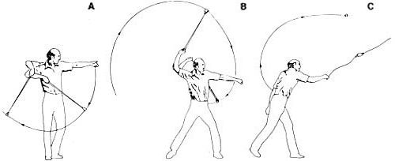

You don't have to anticipate facing a foe namied Goliath to enjoy taking a whirl at . . .
I learned about the hand sling back in my boyhood and spent many enjoyable hours using one to hurl river rocks at tin cans. Since that time, I've never lost my fascination with the power and accuracy of this primitive device.
The biblical account of David's courage and miraculous victory over the giant Goliath is about all most of us know of the history of the sling. But the little weapon was invented long before that legendary encounter. In fact, it's been known in many parts of the world since the Neolithic (late Stone Age) period, and quite possibly since the latter part of the Paleolithic. Early slings were most often made of rawhide or the "well-twisted wool" mentioned by Homer in the Iliad .
The sling was an important weapon to many ancient armies. In the classical Greek period, for instance, stingers and archers often supported the infantry by attacking at long range to expose weaknesses in the enemy's line - and a skilled slinger was considered a match for a bowman in both range and effectiveness.
Much later, Hernando Cortés, in his bloody march to the Aztec capital of Mexico, found the native defenders formidably armed with hand slings. And even as recently as the seventeenth century, the grenadiers of some European armies were using the sling as a weapon.
The traditional hand sling missile is a smooth stone roughly the size and shape of a small egg. But the sling held such great importance for some armies that they employed workers to manufacture molded lead and sunhardened clay missiles. This uniform ammunition allowed their slingers to enjoy greater, and more consistent, range and accuracy. (Archaeologists unfamiliar with the history of the sling have sometimes been puzzled by finds of small clay or lead "eggs," not realizing that they were stockpiles of sling ammunition. These carefully manufactured projectiles often carried inscriptions equivalent to the English "Take that!" or "Ouch!")
Naturally, the sling was eventually supplanted by gunpowder and is now largely forgotten as a weapon - except by a few tribal herdsmen who still use the primitive device to scare of predators.
Today the sling seems best suited to the high purpose of providing low-cost recreation. Besides being easy (and very inexpensive) to construct, slings can be grand fun, especially once you develop a reasonable degree of accuracy . . . something that most people can accomplish with less than an hour's practice!
My version of the hand sling is made by binding a couple of lengths of 1/8"-diameter nylon line to a leather pocket. That's about all there is to it.
Start by scrounging up - for the sling's pocket - a tough but pliable piece of leather (such as the tongue from an old boot) that measures 6" X 2-1/2" or thereabouts. Trim the hide to an oval shape and punch a vertically centered hole about 1/2" in from each end. Now cut two pieces of nylon cord - one 28" long, the other measuring 32".
Assemble the parts by threading an end of one of the pieces of cord through one of the holes in the leather pocket, pulling about an inch of the cord through and looping it back on itself. Then bind the loop by wrapping it tightly with string; kite string is perfect for this. (Have a friend hold the cord while you wrap and tie the string.) Repeat the above procedure to attach the second length of cord to the other end of the leather pocket.
Next, form a finger loop at the free end of the longer cord. Make the loop just large enough for your middle finger to slip into and out of easily. Then wrap string around the two sections of cord that form the loop, extending the winding back about an inch from the base of the loop.
Now fold the pocket in half, with the rough side of the leather facing out, and stretch the sling out full length so that the two cords are lying side by side. Tie a small, hard knot near the end of the unlooped cord, so that the knot is even with the end of the looped cord.
Finish up by melting all four exposed ends of nylon cord (to prevent unraveling) with a match, lighter, or candle - then coat the string windings generously with Elmer's Glue-All to protect them from abrasion.
Ancient slingers had a variety of throwing techniques, including both underhanded and overhanded vertical swings, as well as whirling the sling either horizontally or at an angle over the head. While most of these styles of casting work well with practice, the simplest and - for me - most effective sling technique is an overhand "baseball throw."
To practice, first find an open throwing area with no people or animals nearby that might be struck by a stray missile. Hook the middle finger of your throwing hand through the looped cord and pinch the knot of the other cord between the thumb and forefinger of the same hand. Load the sling by placing a rounded stone no larger than a golf ball in the center of the pocket. [EDITOR'S NOTE: In testing a sling made according to Mr. Ballard's instructions, we found that, up to a point, the larger the stone, the easier it was to control the cast. In fact, we attained good results with some stones that were considerably larger than a golf ball.]
Now, with your free hand, grasp the loaded pocket and lift it toward the target as if aiming; turn your body about 90° away from the target, and sight over the top of your extended hand. Keep your feet together, your throwing; hand close against your chest, and your eyes on the target.
To make a throw, drop the loaded sling and draw your throwing hand slightly downward to start the orbiting motion. The sling must fall in front of you and then be lifted upward and back in a wide vertical arc beside your body. On the first spin, let your throwing arm rise high behind you and then fall just to the rear of your head as you begin a "pitcher's step" with your leading foot. (By decreasing the size of the arc in this manner, you'll be increasing the velocity of the sling.) As the stone reaches the top of its second orbit, throw it as you would a baseball, releasing the knotted cord as your leading foot completes the pitcher's step and your wrist snaps forward.
The missile should fly in a low arc toward the target. If it doesn't, examine your form and try again. Bear in mind that the entire throwing process should consist of one continuous movement. With practice, you'll learn to sense when the stone is in the right position to be released, and your timing will improve. In effect, each stone will "tell" you when to release it by its weight and speed.
Don't, however, expect every throw to be right on target . . . or, at first, even under control. But once you get the technique down, the majority of your throws will sail straight and true. (And don't hesitate to experiment with other techniques until you find the one that best suits you .)
Because of their aerodynamic shape, rounded stones make the best projectiles - they spin out efficiently and retain their energy longer. (Misshapen missiles will sometimes buzz or sing as they wobble away in a curve or spiral.) The nearest creek or gravel bed should supply all the ammo you can carry away.
In the hands of an expert, a sling-thrown stone's initial velocity can exceed 60 miles per hour, with long-distance casts of 250 yards not uncommon. So, since wild throws are frequent at first, please be careful !
Because the sling was invented to enable ancient hunters and warriors to strike disabling blows at long distances, it's classified in the history of technology as a weapon. But if swords can become plowshares, perhaps the sling, too, has a peaceful future. To me, the contemporary value of this ancient tool lies in the pleasure of feeling its remarkable efficiency in my own hands.
|
The author demonstrates the overhand throwing technique he prefers. (""Go ahead, Goliath, make my day!"") |
Within practical limits, the longer the sling, the faster the missile will be propelled. Generally, though, the ideal length is 24"" to 26"" per side. |
 THE OVERHAND THROWING TECHNIQUE [A] The thrower drops the pocket and draws the missile back into a wide vertical orbit. [B] The throwing arm rises high, then swings down behind the slingers head to tighten the first orbit. At the same moment, the slinger begins a long ""pitcher's step."" [C] The thrower completes the forward step as the missile reaches the top of its second orbit ? and the knotted cord is released as the slinger's wrist snaps forward. |